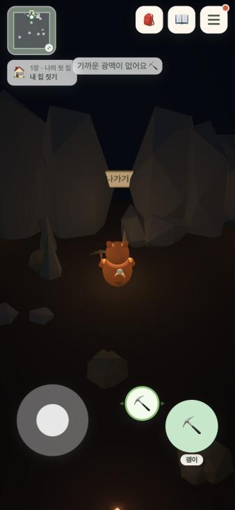
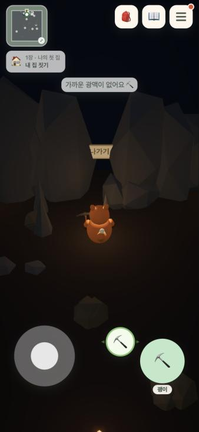
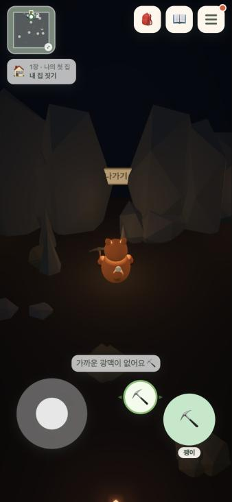
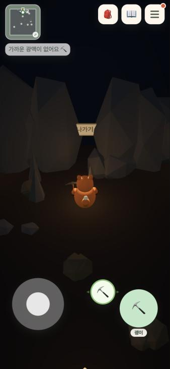

지금위쪽 가운데 고정
스토리 칩 위에 겹쳐서 둘 다 읽기 어렵다. 좌측 열이 위로 올라오면서 생긴 문제.

A위쪽 HUD 바로 아래
좌·우 열 중 더 긴 쪽 바로 아래 가운데. 위치는 지금과 비슷해 익숙하고 어떤 것도 안 가린다. 의뢰를 펼치면 같이 내려간다.

B도구 버튼 바로 위
엄지·눈이 머무는 아래쪽. 행동 직후 결과("광맥이 없어요")가 버튼 옆에서 보인다. 문·작업대 안내 줄과 자리를 나눠 써야 한다.

C스토리 칩 자리를 잠깐 빌림
알림이 떠 있는 1~2초 동안 스토리 칩을 숨기고 그 자리에 띄운다. 화면이 가장 정돈되지만 왼쪽 구석이라 눈에 덜 띈다.